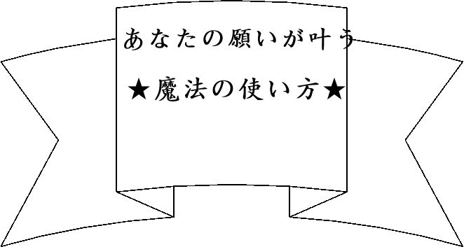

| あなたの願いが叶う ★魔法の使い方★ | |
| お手紙セラピスト＠みよちゃん | |
| Otegamiserapisuto Miyochan (2014) | |

こんにちわ★
お手紙セラピストのみよちゃんです(*´v`*)♪
この度は、
【あなたの願いが叶う★魔法の使い方★】のご購入、
ありがとうございました！！
１４ページと、ページ数は少ないですが、
大切な部分を書かせて頂いていますので、実践もしやすいと思います！
では、願いが叶う仕組み、についてお話していきたいと思いますヽ(*>∀<*)ﾉ
復縁や結婚、またお金のことなど、
自分なりの願いがあると思うのですが、どうやったら叶うのか？
・・・・・どうやったら叶うのでしょう？
それを一度、自分に問いかけてみて欲しいのです。
書店にはいろんな本が並んでいて、ネットでも検索すればいろんな方法が出てきます。
でも、実際に動くのは自分ですし、
叶えるのも自分です。
もちろん、宇宙の法則と呼ばれるものもありますし、
法則も大切だと思います。
ですが、法則ばかりに振り回されて、結局やることをやっていないと、
叶う願いも叶わないのです。
そして、なによりも、
自分なりのやり方を取り入れていくことが大切なんです！
なので、自分の中で浮かんだ答えを、一度書いてみて下さい★
書き方は下記を参考にしてくださいね♪
例えば、私の場合、
願い→【家でのんびり過ごしながら、収入を得たい】
どうしたらいい？ ↓
・家でできる仕事を見つける
・インターネットで収入を得る
・自動で物が売れて、勝手に貯金通帳に振込される仕組みをつくる（笑）
・時間が自由になる働き方を探す
・好きなことをやってみる
・自分にとって楽しめる働き方はなんだろう～と考える
など、です。
で、その中で、自分が気持ちよくできることをやっていくんですね。
もちろん、やってみないと、自分がどういう感覚になるかはわからないので、挑戦してみましょう～★
で、続けられそうなことは、続けていきましょう。
無理してやっても、苦しさから挫折してしまうこともあるので、
自分が幸せな気持ち、または、ちょっとでもやってみようかな、と心が動くことをやっていくんです♪
もちろん、苦しいとわかっていても、これをやってみたい！という気持ちが湧けば、やっていきます。
これは、夢のために勉強する、みたいな感じです。
例えば、医者になるためには、それなりの学力がいるので、
勉強が苦しいからといって、やらないわけにはいかない、ってことです。
ま、夢を叶えるためなら、たいていのことはできますが★
▼では、あなたの方法を書いてみて下さい。
★願い事
★どうしたらいい？
結婚や復縁なら、
・出会いのある場所に行く
・彼に見合う女性になる
・ファッションを変える
・髪形を変える
・笑顔で過ごす
・復縁ができるよう、いろんな情報を得る
・とりあえず彼氏をつくる
・一回、願うことを辞めてみる
など
お金や仕事なら、
・毎月の貯金額を決める
・資格を取る
・お金に対するイメージを変える
・自分の好きなことをとりあえずやってみる
・今あるもので、もっと豊かに過ごせないか考えてみる
など
こうやってみると、今からでもいろいろできることはありそうですよね★
いろんなところから情報を得ることはすごく大切ですし、
その情報が役に立つこともいっぱいあります！
ただ、 人の言葉を鵜呑みにしすぎない ことも大切なんです♪
それは、私の言葉も同じです。
以前、私は、潜在意識が願いを叶えてくれると思い込んでいた時期があり、
どうすれば、潜在意識が願いを叶えてくれるのか、必死に答えを探していました。
でも、潜在意識も自分だから、
自分が願いが叶うように動くことが大切 なんだ、という結論に至り、
思い込みが、自分の人生を創っているだけだから、
思い込みを変えたらいい 、という考えに行きつきました。
その思い込みを変えるのは、
自分の気持ちがゆる～くなる方法を取り入れる 、ってことでもあり、誰かの情報をすべて取り入れることではない、とも思いました。
例えば、
復縁に執着しているなら、
復縁でなくても、ほかにも幸せになる方法を探せばいいんじゃない？
お金に執着しているなら、
まずは、今の収入で満足できるように変えてもいいんじゃない？
結婚なら、
自分から積極的に動いてみてもいいんじゃない？
など、ちょっと思考を変えてあげるのです。
もちろん、誰かの考え方にすごく共感できたり、私もやってみたい！
と思ったことは、他の方の方法でも積極的に取り組んだり、
願いに執着しまくって（笑）、
あらゆる情報を得る時期も必要だと思っています★
潜在意識とは、無意識のことで、
今、日本語を話せたり、携帯を操作できたり、歯磨きしたり、
無意識の領域に入れば、勝手に動ける＝楽 っていうだけで、
それまでは、自分の中にインプットさせる時期が必要であり、
練習していくしかないんですね。
自転車に乗れるようになるために、練習する、みたいな感覚です。
失敗や成功などを繰り返し、
感覚をつかめるようになったら、
あとは、なんとなくでうまくいくようになっていくんです★
なので、
そこまで行き着くまでには、
時間も労力もかかるのです。
かかるというよりは、かけてあげて欲しいのです★
人間は、欲があるので、今すぐなんとかしたい！と焦る気持ちが出がちです。
でも、焦る＝現実に目が行き過ぎる ということなので、
やらなくてもいいことにまで、手を出してしまったり、
不安からの行動が増えるので、うまくいくこともいかなくなったりします。
願いを持つことは大切ですが、
願いが叶っても、叶わなくても、
自分は幸せになれるし、
コツコツやっていけば、
そのうち無意識に幸せな方向に
向かうようになる～★
くらいでいいと思います(￣▽￣)ノ＿彡☆
願いが叶う＝幸せな道 とは限らないですしね。
結婚したら幸せになれるのではなく、
自分が幸せな状況を創れるから、幸せがあるだけ
なんです(●´艸｀)
どなたかのお話で、
旦那様の収入をあげたいなら、家を居心地よくしたり、
旦那様が喜ぶことをする、ってあったのですが、
私は、半分違う、と思いました。
自分が、旦那様のことが好きで、
幸せな気持ちでいてほしいから、いろいろやるのであって、
収入ではないんですよね。もちろん、増えたら嬉しいですけど（笑）
でも、私は、夫と結婚して、そんな考えがなくても
お付き合いし始めた時から比べると、収入がすごく増えたんです！
私は、そうなったのは８割は夫の実力だって思っていますし、
私は、夫が幸せな気持ちでいてくれたら、
私も 嬉しいから、やれることをやっているだけ で、
それが収入と結びついているかは不明です～。
ちなみに、私は料理が嫌いなので、料理は適当です（笑）
おいしい手料理をふるまっても、自分が無理していたら意味がないし、
頑張りすぎると、自分が相手に不満をためてしまうので、
自分が頑張らない代わりに、相手にも頑張らなくていいよ～のスタンスで夫とは関わっているんですね。
たぶん、そこで、その方の話を鵜呑みにして、
喜ぶことをいっぱいやれば、収入が上がる！と思いこんで、いろいろやっても、
きっと、収入が上がることを期待して、結果がでない現実に振り回されて、
焦りやイライラが出るだろうなぁ～と思っています。
願いが叶う仕組みは、自分の中にあるもので、
それに出会うまでに時間はかかりますが、
自分が続けられることをやっていく、
自分がやりたいことをやっていく、だけ
なんだと思います♪
そして、その中で、
少しでも、幸せを感じられる方法をたくさん取り入れていくことです。
今、持っている願いは、叶うか叶わないかはわかりませんが、
やっていることは、自分が幸せになっていく道なので、
楽しみながら、毎日を過ごされるといいと思います！
自転車が乗れるようになったときの練習方法は、みんな違うように、
願いが叶っていく仕組みも、みんな違う んです。
なので、続けられないことをやるよりは、
続けられる方法で、
ゆる～くやっていくことがポイント です(*´∀`*)
以上、願いが叶う魔法の使い方、のお話でした★
これからもステキを毎日をお過ごしください+ﾟ*｡：ﾟ+（人*´∀｀）+ﾟ：｡
ＨＡＰＰＹなことがたくさん降り注ぎますように★
では、またブログなどでお会いしましょう～＠＾▽＾＠
お手紙セラピスト みよちゃん❤